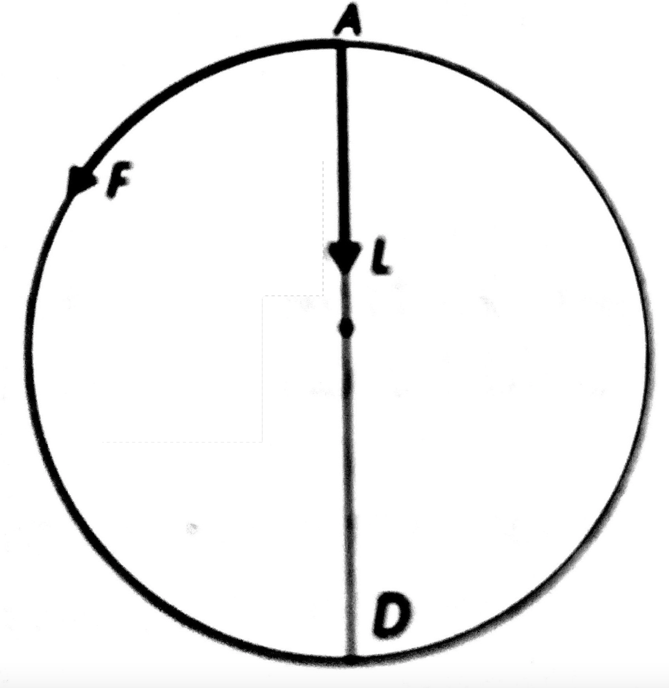

III.4'te Newton'un hesapları
- Densmore'dan okumaya devam, sayfa 367.
** Newton'un III.4'ü açıklamasının açılımı
Ay, yerçekimi gücünün çekimi ile; dünyaya yönelir, düz çizgi hareketinden devamlı geri çekilir ve yörüngesinde tutulur.
Densmore:
İspatlanacak
Yeryüzünde ağırlık gücü ve merkezcil güç aynı mesafede aynı etkiyi yapıyorlar, öyleyse aynı şey oldukları sonucuna varılabilir.
[ III.4'da Newton'un ispatlamak istediği bu mu? ]
[ «Ağırlık gücü.» Neden ağırlığın bir güç olduğunu varsayıyoruz? Ağırlık hareket sonucu da olabilir. Havalanmak için hızlanan bir uçakta insanlar kendilerini koltuğa yapıştıran bir ağırlık hissederler. Bu ağırlığı uçağın kuyruğunda bulunan bir çekim gücü ile mi açıklıyoruz? Hayır. O zaman, yeryüzündeki ağırlığın hareketten kaynaklanmadığına dair nasıl bir delilimiz var? ]
Densmore:
İspat
Ayın sizigilerde dünyadan ortalama uzaklığı, dünyanın yarıçapı olarak, Batlamyus ve birçok astronoma göre 59; Wendelin ve Huygens'e göre 60; Kopernik'e göre \(60\frac{1}{3}\); Streete'e göre \(60\frac{2}{5}\); ve Tycho'ya göre \(56\frac{1}{2}'dir\).
[ Densmore, Newton'un aynı ortalama uzaklağını bulmak hangi kaynakları kullandığı hakkında detaylara giriyor ama bizim bilmemiz gereken Newton'un ayın dünyadan ortalama uzaklığı için 60 dünya yarıçapını seçmiş olması. Newton ayrıca, ayın dünya etrafındaki dönemini, ve dünyanın çevresini veriyor. Fakat, hesaplarda ayrıca, dünyanın çapını, ayın yörüngesinin çapını ve dünyanın yörüngesinin çapını bilmemiz gerekiyor. Bu bilgiler toplu olarak bu sayfada bulunabilir. ]
Densmore:
1. Bölüm: Önce ivmelendirici merkezcil gücün yörüngedeki aya olan etkisini hesaplıyoruz
If the moon be supposed to be deprived of all motion and dropped, so as to descend towards the earth, under the influence of all that force by which (by Proposition 3 Corollary) it is held back in its orbit, it will in falling traverse \(15\frac{1}{12}\) Paris feet in the space of one minute.
[ Newton'un bu cümlesindeki gizli varsayımları belirtmekte fayda var. Newton, ayın ve yeryüzündeki bir taşın; bütün gücü dünyanın merkezinde toplanmış gibi etki eden Newtoncu çekim gücü tarafından çekildiğini varsayıyor. Böyle bir güç yok. Böyle bir etken yok. ]
Densmore:
Bu, üç adımlık sunumumuzun birinci bölümünün ifadesidir; yörüngedeki ayın ivmelendirici gücünü veren bölüm.
[ İvmelendirici güç neymiş? "Düşürücü güç" de diyebiliriz. Nasıl olsa olmayan bir gücü, ve yörünge hesaplarına girmeyen bir gücü isimlendirmiş oluyoruz.]
Densmore:
Bu gücü, ayın, yörüngesinin mesafesinden başlayarak bir dakika içinde düşeceği mesafenin ölçüsü olarak kullanacağız.
[ Yani, ne demek istiyor? Ayı yörüngesinde tutan da, dünyaya doğru çeken de bu "ivmelendirici merkezcil güç" dediğimiz şeydir; ayın yörüngesinde bir dakikada düştüğü mesafe, bu gücün aya ne kadar etki ettiğinin ölçüsü olacaktır. Yani diyorlar ki, biz bir mesafe ölçüyoruz ve bu mesafenin, Newtoncu çekim gücünün etkisinin sonucu olduğuna inanıyoruz.]
Bu sonuç, ya 1. Kitabın 36. önermesi, veya, aynı hesaba gelen, yine 1. kitaptadaki 4. Önermenin 9. Doğal Sonucunda yapılan hesaplardan çıkmaktadır.
(s.369)
I.36, daha karmaşık bir yoldan giderek (Newton'un daha sonra konik kesitlerden geliştireceği sonuçlara dayanarak), I.4, Doğal Sonuç 9'la tamamen aynı sonuca varıyor.
Biz daha önce 174. sayfada ispatladığımız I.4'ün Doğal Sonuç 9'u kullanacağız.
Çünkü ayın 60 dünya yarıçapı mesafesindeki yörüngesinde bir dakikada çizdiği yayın (versed sine)'ı, \(15\frac{1}{12}\) Paris feet'dir veya daha kesin olarak, 15 feet 1 inch ve \(1\frac{4}{9}\) lines'dır.
- Adım: Ayın yörüngesinde bir dakikada geçtiği mesafe ne kadardır?
\(x = 187,961 \; \text{Paris feet}\)
Yörüngede 1 dakikada geçilen mesafe = 187,961 Paris feet
- Adım: Teğetsel hareketi olmazsa, ay, aynı merkezcil gücün etkisi altında, bir dakikada ne kadar düşerdi?

Şekil 1: Ayın yörüngesinde düşüşü
I.4'ün 9. Doğal Sonucuna göre, eğer ay yörüngesinin bir noktasından bırakılmış olsaydı, ve onu yörüngesinde tutan aynı gücün etkisi altında dünyaya doğru düşseydi, düşeceği mesafe
\begin{align*} \frac{AL}{AF} = \frac{AF}{AD} \end{align*}orantısıyla verilirdi, yani,
\begin{align*} \frac{\text{Düşeceği mesafe}\;AL}{\text{Yörüngede geçilen mesafe}\; AF} = \frac{\text{Yörüngede geçilen mesafe}\; AF}{\text{Yörüngenin çapı} \; AD} \end{align*}Bir dakika için:
\begin{align*} \frac{AL}{187,961 \;\text{Paris feet}} = \frac{187,961 \; \text{Paris feet}}{2,353,890,000 \; \text{Paris feet}} \end{align*}\(AL = 15.0089161 \text{Paris feet}\), veya,
\(15\) Paris feet, 0 inch, \(1\frac{3}{11}\) lines.
Bu sayı, ayın, kendisini yörüngede tutan gücün etkisi altında bir dakikada düşeceği mesafedir.
Bu sayı, aynı zamanda, yörüngedeki ayın üzerinde etkili olan ivmelendirici gücün ölçüsüdür.
Birinci bölümün sonu.
[ s.370, Densmore, şimdi de güneşin ay üzerindeki etkisini hesaplıyor. Newton da aynı yörüngesine güneş tarafından etki ettiğini düşünüp bu etkiyi hesaplamış ama bu o kadar küçük bir etki ki, vakit apırmayı şimdilik gerekli görmüyorum. ]
- Bölüm: Şimdi aya etki eden ivmelendirici gücün yeryüzünde ayı nasıl etkileyeceğini araştıracağız.
Bundan dolayı, dünyaya yaklaşırken, o güç, mesafenin karesinin tersi ile arttığına göre, ve dünyanın yüzeyinde ayın mesafesinde olduğundan \(60 \times 60\) kere daha büyük olacağına göre, bizim bölgemizde o gücün etkisi altında düşen bir cisim 1 dakika içinde \(60 \times 60 \times 15\frac{1}{12}\) Paris feet'i kadar mesafe geçmiş olur; veya 1 saniye içinde \(15\frac{1}{12}\) feet veya daha kesin olarak, 15 feet 1 inch ve \(1\frac{4}{9}\) lines geçmiş olur.
Burada hayalî bir deney yapacağız.
III.3'te ispat edildiği gibi, ayı yörüngesinde tutan merkezcil gücün ters kare yasasına uyduğunu varsayalım.
Eğer \(f \propto \frac{1}{r^2}\) ilişkisi, ayın değişik yarıçaptaki değişik yörüngelerinde geçerli olduğu hayal edilirse, o değişik mesafelerde, değişik ivmelendirici güçlerin etkili olduğunu bulabilirdik.
Yani, ayın şimdik yörüngesinini iki katı büyük çapı olan bir yörüngesi olsaydı, ayın üzerinde etkili olan merkezcil gücün ivmelendirici miktarı, 60 dünya çapında olan etkisinden \(\frac{1}{4}\) daha az olacaktır.
Fakat Newton, hayal gücümüzü zorlayıp teri durumu düşünmemizi istiyor.
Ayı, sadece bir dünya yarıçapı olan bir yörüngeye getirdiğimizi düşünelim.
Yani, ayın dünya yüzeyinin hemen üstünde bir yörüngede olduğunu düşünelim.
Ondan sonra 1. Bölümde uyguladığımız sürecin aynısın tekrarlayacağız, ve ayın teğetsel eylemsiz hareketinden yosun olduğunu düşünün ve ayı, aynı ivmelendirici merkezcil gücün etkisi altında düşmesine izin verelim.
Birinci bölümde, ayın, 60 dünya yarıçapı yörüngesinden belli bir zaman içinde ne kadar düşeceğini hesapladığımız gibi, bir dünya yarıçapındaki yörüngesinde de ne kadar düşeceğini hasaplayabiliriz.
\begin{align*} \frac{\text{yörüngede güç}}{\text{dünyanın yüzeyinde güç}} = \frac{(\text{yüzeyde yarıçap})^2}{(\text{yörüngede yarıçap})^2}\\ \\ \end{align*} \begin{align*} \frac{f_o}{f_s} \quad \quad \quad = \quad \quad \quad \frac{r^2}{(60r)^2} \quad \quad \quad = \quad \quad \quad \frac{1}{60^2} \end{align*}Öyleyse, dünyanın yüzeyinde güç \(60^2\) kadar daha büyük olacaktır.